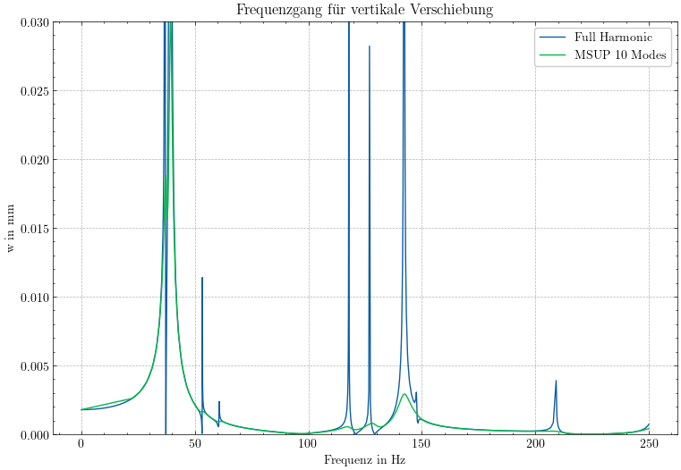
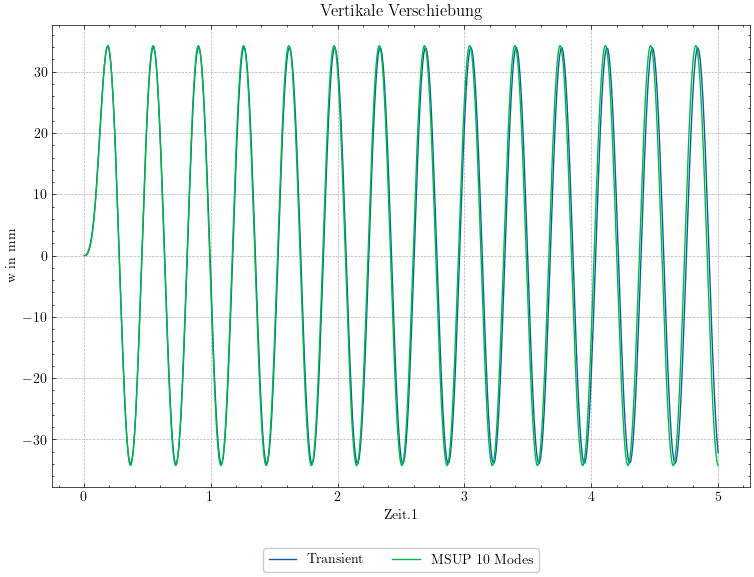

import pandas as pd
import numpy as np
import matplotlib.pyplot as plt
import scienceplots
plt.style.use(['science',"grid"])
plt.rcParams['grid.color'] = 'grey'
plt.rcParams['grid.alpha'] = 0.6
plt.rcParams['grid.linestyle'] = '--'
# Read the first table from the Excel file
df = pd.read_excel("Vergleich_Harmonic_FullvsMSUP.xlsx", sheet_name=0)
# Create first dataframe with columns 1-2 (assuming 0-based index)
df_full = df.iloc[:, [0, 1]].set_index(df.columns[0])
# Create second dataframe with columns 3-4
df_msup = df.iloc[:, [2, 3]].set_index(df.columns[2])
fig,ax = plt.subplots(1,1,figsize=(9,6))
df_full.plot(ax=ax,label="Full Harmonic")
df_msup.plot(ax=ax,label="MSUP 10 Modes")
ax.set_title("Frequenzgang für vertikale Verschiebung")
ax.set_xlabel("Frequenz in Hz")
ax.set_ylabel("w in mm")
ax.set_ylim([0,0.03])
ax.legend(["Full Harmonic","MSUP 10 Modes"])
fig.savefig("../images/Frequenzgang_harmonsicher_Anregung.png",bbox_inches="tight",dpi=300)

import pandas as pd
import numpy as np
import matplotlib.pyplot as plt
import scienceplots
plt.style.use(['science',"grid"])
plt.rcParams['grid.color'] = 'grey'
plt.rcParams['grid.alpha'] = 0.6
plt.rcParams['grid.linestyle'] = '--'
# Read the first table from the Excel file
df = pd.read_excel("Vergleich_MSUP_NM.xlsx", sheet_name=0)
# Create first dataframe with columns 1-2 (assuming 0-based index)
df_full = df.iloc[:, [0, 1]].set_index(df.columns[0])
# Create second dataframe with columns 3-4
df_msup = df.iloc[:, [2,3,5]].set_index(df.columns[2])
fig,ax = plt.subplots(1,1,figsize=(9,6))
df_full.plot(ax=ax,label="Full Harmonic")
ax.set_title("Vertikale Verschiebung")
ax.set_xlabel("Zeit in s")
ax.set_ylabel("w in mm")
# ax.set_ylim([0,0.03])
ax.legend(["Transient","MSUP 10 Modes"], loc='lower center', bbox_to_anchor=(0.5, -0.2), ncol=2)
fig.savefig("../images/NM_Sprungbrett.png",bbox_inches='tight',dpi=300)
df_msup["Msup 1"].plot(ax=ax,label="MSUP 1 Modes")
# df_msup["Msup 10"].plot(ax=ax,label="MSUP 10 Modes")
# ax.legend(["Transient","MSUP 1 Mode","MSUP 10 Modes"])
ax.legend(["Transient","MSUP 10 Modes"], loc='lower center', bbox_to_anchor=(0.5, -0.2), ncol=2)
fig.savefig("../images/Vergleich_MSUP_NM.png",bbox_inches='tight',dpi=300)

import os
display(os.getcwd())
'/home/steffen/EAH/FEMI_Tutorial/FEM_I_Skript/chapters/chapter6/Data'